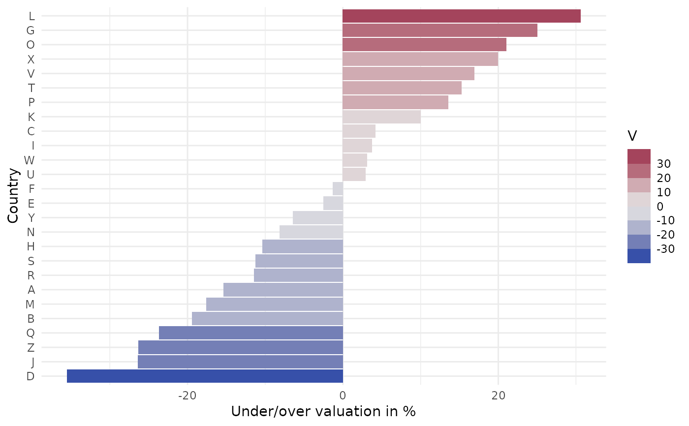
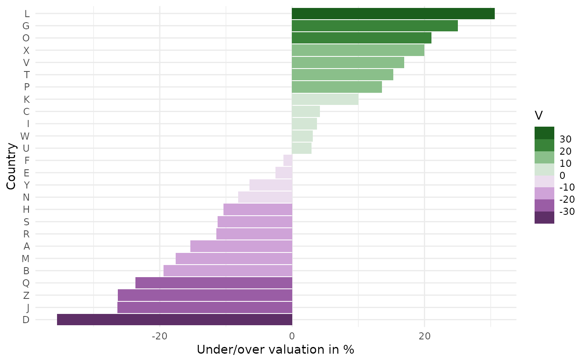

scale_colour_binned_diverging.RdBinned ggplot2 color scales using the color palettes generated by diverging_hcl.
scale_colour_binned_diverging( palette = NULL, c1 = NULL, cmax = NULL, l1 = NULL, l2 = NULL, h1 = NULL, h2 = NULL, p1 = NULL, p2 = NULL, alpha = 1, rev = FALSE, mid = 0, na.value = "grey50", guide = "coloursteps", n_interp = 11, aesthetics = "colour", ... ) scale_color_binned_diverging( palette = NULL, c1 = NULL, cmax = NULL, l1 = NULL, l2 = NULL, h1 = NULL, h2 = NULL, p1 = NULL, p2 = NULL, alpha = 1, rev = FALSE, mid = 0, na.value = "grey50", guide = "coloursteps", n_interp = 11, aesthetics = "colour", ... ) scale_fill_binned_diverging(..., aesthetics = "fill")
| palette | The name of the palette to be used. Run |
|---|---|
| c1 | Chroma value at the scale endpoints. |
| cmax | Maximum chroma value. |
| l1 | Luminance value at the scale endpoints. |
| l2 | Luminance value at the scale midpoint. |
| h1 | Hue value at the first endpoint. |
| h2 | Hue value at the second endpoint. |
| p1 | Control parameter determining how chroma should vary (1 = linear, 2 = quadratic, etc.). |
| p2 | Control parameter determining how luminance should vary (1 = linear, 2 = quadratic, etc.). |
| alpha | Numeric vector of values in the range |
| rev | If |
| mid | Data value that should be mapped to the mid-point of the diverging color scale. |
| na.value | Color to be used for missing data points. |
| guide | Type of legend. Use |
| n_interp | Number of discrete colors that should be used to interpolate the binned color scale. It is important to use an odd number to capture the color at the midpoint. |
| aesthetics | The ggplot2 aesthetics to which this scale should be applied. |
| ... | common continuous scale parameters: `name`, `breaks`, `labels`, and `limits`. See
|
If both a valid palette name and palette parameters are provided then the provided palette parameters overwrite the parameters in the named palette. This enables easy customization of named palettes.
# adapted from stackoverflow: https://stackoverflow.com/a/20127706/4975218 library("ggplot2") # generate dataset and base plot set.seed(100) df <- data.frame(country = LETTERS, V = runif(26, -40, 40)) df$country = factor(LETTERS, LETTERS[order(df$V)]) # reorder factors gg <- ggplot(df, aes(x = country, y = V, fill = V)) + geom_bar(stat = "identity") + labs(y = "Under/over valuation in %", x = "Country") + coord_flip() + theme_minimal() # plot with default diverging scale gg + scale_fill_binned_diverging(n.breaks = 6)# plot with alternative scale gg + scale_fill_binned_diverging(palette = "Purple-Green", n.breaks = 6)